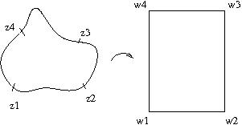
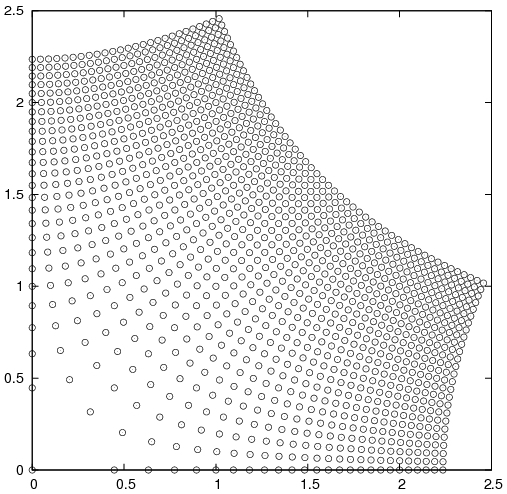
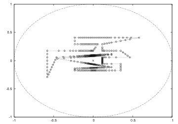
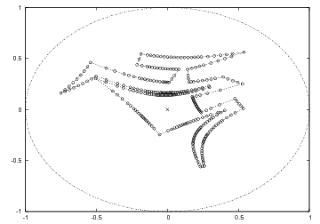
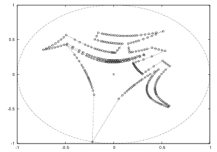
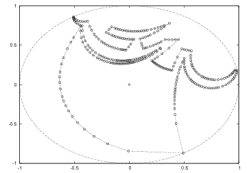

Nelikulmion moduli eli venymäkerroin on keskeinen numeerinen suure konformikuvauksissa. Sovitaan ensin, että yleistetty nelikulmio on yhdesti yhtenäinen alue, jonka reunalta on määritelty vastapäivään luettuna neljä reunapistettä. Jos tämä nelikulmio kuvataan konformisesti suorakaiteeksi siten, että mainitut reunapisteet kuvautuvat suorakaiteen kulmiksi, niin suorakaiteen korkeuden ja leveyden suhde on nelikulmion moduli. Nelikulmion modulia käytetään usein konformikuvausten laadun mittaamisessa. Tällöin alkuperäinen nelikulmion moduli on jollakin teoreettisella tavalla tunnettu ja numeerisesti laskettua nelikulmion modulia verrataan siihen.
HUOM: Tämä kuva ei ole skaalassa!
Möbius-kuvauksilla tarkoitetaan muotoa w(z)=(az+b)/(cz+d) olevia kuvauksia, joilta edellytetään lisäksi determinantin häviämättömyyttä, eli ad-bc ≠ 0. Näitä sanotaan myös lineaarisiksi fraktionaalisiksi kuvauksiksi tai R1,1-kuvauksiksi. Möbius-kuvaukset kuvaavat suorat suorat ja ympyränkaaret suoriksi ja ympyränkaariksi ja ovat konformisia kaikkialla muualla paitsi navassa, joka sijaitsee pisteessä z=-d/c.
Möbius-kuvausten eräitä erityistapauksia ovat Cayleyn muunnokset, jotka kuvaavat yksikkökiekon D(0;1)={z:|z|<1} joksikin standardiksi puolitasoksi tai toisin päin. Esimerkiksi w(z)=(1+z)/(1-z) kuvaa vasemman puolitason yksikkökiekoksi. Toinen tärkeä Möbius-kuvausten luokka on yksikkökiekon automorfismit. Nämä ovat aina muotoa w(z)=exp(i*φ*z)*(z-a)/(1-a'*z), missä φ on rotaatiokerroin ja a' on a:n kompleksikonjugaatti.
On todistettu, että jos funktio w toteuttaa differentiaaliyhtälön
w'(z)=B ∏k (z - zk)- αk/π,
missä kukin alkukulma zk on reaaliluku, niin se kuvaa ylemmän puolitason konformisesti monikulmioksi, jonka kulmien suuruudet ovat αk radiaania kukin. Schwarz-Christoffel- parametriongelmaksi, joka voi joskus olla erittäin monimutkainen, sanotaan alkukulmien zk määrittämistä sopivasti niin, että lopullisten kulmien koordinaatit wk ovat kohdallaan.Halutaan esimerkiksi funktio, joka kuvaa ylemmän puolitason ensimmäiseksi neljännekseksi. Tällaista varten α1=π/2 (ainoa kulma), ja siis
w'(z)=B z-1/2,
jolloin siis w(z)=(1/2)B z1/2 ja valitsemalla B sopivasti, saadaan w(z)=z1/2, kuten pitikin. Alla olevasta kuvasta näkyy, mitä tapahtuu kun ylemmässä puolitasossa sijaitsevaa suorakulmaisen koordinaatiston pisteistöä taitetaan näin. Jos alkukulmia on kaksi suoraa kulmaa, päädytään tyypillisesti käänteisiin trigonometrisiin funktioihin, mutta monissa muissa tapauksissa kyseeseen tulevat korkeammat transkendenttiset funktiot, joita voi laskea ainoastaan numeerisella integroinnilla.
Tämä on tunnetuin oskulaatioalgoritmeista ja sitä on alunperin käytetty Riemannin kuvauslauseen todistuksessa. Riemannin kuvauslauseen mukaan kaikilta yhdesti yhtenäisiltä alueilta (paitsi koko kompleksitasosta!) on olemassa konformikuvaus yksikkökiekoksi. Algoritmi perustuu siihen, että kuvattava alue ensin skaalataan kokonaisuudessaan yksikkökiekon sisään ja sen jälkeen siitä valitaan origosta lukien lähin piste. Kuviota 'siirretään' sen jälkeen yksikkökiekon automorfismilla siten, että 'minimipiste' asettuu origoon. Tämän jälkeen otetaan holomorfinen neliöjuuri ja suoritetaan automorfismi takaisinpäin säilyttäen alkuperäisen origon kuvan.
Seuraavassa on esitetty tarvittavat MATLAB-ohjelmakoodit, sillä nämä algoritmit muodostavat oskulaatioalgoritmien tutkimuksen 'rungon'. Ne voivat kuitenkin olla varsin hitaita tulkattavissa järjestelmissä, kuten GNU Octavessa, joten vakavampaan käyttöön suositellaan C++ - tai FORTRAN-kielisiä implementaatioita.
function [q,v]=adjpolygon_MATLAB(p,tol)
% usage: [Q,V]=adjpolygon_MATLAB(P,TOL)
%
% P is a list of complex numbers forming a counterclockwise-oriented polygon.
% This function repeatedly checks whether an edge forms an angle of less than
% TOL. If so, then an edge is split in half in Q to lessen the seriosity of
% this condition. The iteration stops when the polygon does not need to be
% altered anymore. List V consists of new vertice indices corresponding to
% original vertices in P.
%
% Author: Mikko Nummelin, 2007, 2008
if nargin<1
error('usage: W=adjpolygon_MATLAB(P,TOL)\n');
else if nargin<2
tol=.1; % default value for tolerance
end
qtmp=[p,p(1)]; % to make the array circular
changes_made=true; % to enter the loop at least once
while changes_made==true
changes_made=false;
q=qtmp(1);
for k=1:length(qtmp)-1
% Checks whether an edge in polygon forms an
% angle exceeding the tolerance condition. If yes,
% then a vertice is added to split the edge in half.
if abs(imag(log(qtmp(k+1)/qtmp(k))))>tol
av=(qtmp(k)+qtmp(k+1))/2;
q=[q,av,qtmp(k+1)];
changes_made=true;
else
q=[q,qtmp(k+1)];
end
end
qtmp=q;
end
q=q(1:length(q)-1); % chops away the last value
% Searches for indices of vertices in q corresponding to original
% vertices in p.
v=zeros(1,length(p));
for k=1:length(p)
v(k)=find(q-p(k)==0);
end
end
function w=holsqrt_MATLAB(z,k)
% usage: W=holsqrt_MATLAB(Z,K)
%
% Z is a list of complex numbers approximating a Jordan curve,
% K is the index of first member (usually this member has value of zero)
% which is taken to the holomorphic square root.
%
% Author: Mikko Nummelin, 2007, 2008
%
% BUGS: NEVER use this in GNU Octave or in any 'production environment'
% This implementation is for algorithmic clarification only and
% EXTREMELY INEFFICIENT in interpreted systems. Use dynamic
% extension versions instead.
if nargin<1
error('usage: W=holsqrt_MATLAB(Z,K)\n');
elseif nargin<2
k=1;
end
% Resulting array
w=zeros(1,length(z));
% The first member of holomorphic square root should be the value of
% complex square root nearest to -i.
p=-i;
if k < length(z)
k1=k+1;
else
k1=1;
end
while k1 ~= k
s=sqrt(z(k1));
% Chooses the next value of square root so that it is the
% alternative located nearest of previous value of hol.
% square root.
if abs(s-p)>abs(s+p)
w(k1)=-s;
p=-s;
else
w(k1)=s;
p=s;
end
% Increments the index, but wraps around to 1 at the end of
% the array.
if k1 < length(z)
k1=k1+1;
else
k1=1;
end
end
end
function [w,m]=koebe_step_MATLAB(z,tol)
% usage: [w,m]=koebe_step_MATLAB(z,tol)
%
% Author: Mikko Nummelin, 2007, 2008
if nargin<1
error('usage: W=koebe_step_MATLAB(Z,TOL)\n');
elseif nargin < 2
tol=.99; % default value for tolerance
end
[m,mindex]=min(z);
w=z;
% The step is accepted only if nearest point from origin is nearer
% than the tolerance level.
if abs(m) < tol
% Finds the angle, how much the Jordan-area should be rotated
% in order to place the minimum point at the negative real
% axis and performs such rotation.
rot=-m'/abs(m);
w=w.*rot;
% Performs the Koebe transform by 'translating' the minimum
% point onto the origin by unit-disk automorphism and then
% performing the holomorphic square root. As we know that
% if |z| < 1, then |sqrt(z)| > |z|, this means that the points
% in the boundary are transformed slightly nearer the edge
% of the unit disk, not however landing outside it.
m=abs(m);
w=(w+m)./(1+m*w);
w=holsqrt_MATLAB(w,mindex);
ms=sqrt(m);
w=(w-ms)./(1-ms*w);
% Finally the rotation is reversed for visual effects.
w=w.*rot';
end
end
function w=koebe_MATLAB(z, rounds, tol)
% usage: w=koebe_MATLAB(z, rounds, tol)
%
% Author: Mikko Nummelin, 2007, 2008
if nargin<1
error('usage: W=koebe_MATLAB(Z,ROUNDS,TOL)\n');
elseif nargin<2
rounds=100; % default rounds
tol=.99; % default value for tolerance
elseif nargin<3
tol=.99;
end
% Scales the Jordan-area into the unit disk.
[m,mindex]=max(z);
w=z./abs(m);
for k=1:rounds
[w,m]=koebe_step_MATLAB(w,tol);
if abs(m)>=tol
break;
end
end
end
% A simple test program for Koebe algorithm implemented in MATLAB.
% Mikko Nummelin, 2008
1;
p=[0,3,2+i,4+2i,.5+2i];
p2=p-(.5+.5i);
[q,v_ind]=adjpolygon_MATLAB(p2,.05);
plot(q,'*');
fprintf('Press any key\n');
pause;
q2=koebe_MATLAB(q,50);
plot(q2,'r*',exp(i*[0:pi/100:2*pi]),'k-');
% Prints the approximated Schwarz-Christoffel-parameters
imag(log(q2(v_ind)))
Edellämainitut koodit ovat saatavissa paketista koebe_MATLAB-1.0.tar.gz. Paketti puretaan (esimerkiksi) seuraavasti:
$ zcat koebe_MATLAB-1.0.tar.gz | tar xvf - $ cd koebe_MATLAB-1.0/
Tämä menetelmä on edellisen parannus, joka käyttää hyväkseen holomorfista logaritmia. Kun kompleksinen logaritmi tyypillisesti tarkoittaa:
ln(z)=ln|z|+i*arg(z),
eli reaaliosa tulee itseisarvon logaritmista ja imaginaariosa suuntakulmasta, niin holomorfisessa logaritmissa edellytetään jatkuvuutta samaan tapaan kuin holomorfisessa neliöjuuressakin. Tämä saadaan ohjelmallisesti aikaiseksi siten, että kun lasketaan kompleksisen lukujonon logaritmeja, jokaista pistettä kohti verrataan, mikä seuraavista logaritmin arvoista:
ln|z|+i*arg(z)+2*i*n*π,
ln|z|+i*arg(z)+2*i*(n+1)*π,
ln|z|+i*arg(z)+2*i*(n-1)*π
Edellämainitun logaritmisen Koeben algoritmin koodit ovat saatavissa paketista logkoebe_MATLAB-1.1.tar.gz. Hakemisto sisältää testitiedoston, joka osoittaa oikean käyttötavan.
Tässä menetelmässä logaritmin ja sopivan skaalauksen jälkeen otetaan hyperbolinen sini, jolloin aluetta saadaan huomattavasti laajennettua vasemmassa puolitasossa. Koska hyperbolinen sini kuitenkin määritellään: w(z)=(exp(i*z)-exp(-i*z))/2, tarkoittaa tämä myös mahdollisten virheiden eksponentiaalista kasautumista. Tämä tekee 'perusmuotoisen' hyperbolisen sinin menetelmän epästabiiliksi.
Menetelmää voidaan parantaa tekemällä välissä sopiva napakoordinaatistomuunnos ja käyttämällä hyväksi 'puolikiekkomuunnosta'
w(z)=(z^2+2*z-1)/(-z^2+2*z+1)
joka kuvaa konformisesti oikean yksikköpuolikiekon koko yksikkökiekoksi. Ks. tästä kaikki edellämainitutkin ohjelmat sisältävästä paketista sinhlog-alkuisia tiedostoja ja kaikkia ym. algoritmeja esittelevää testiskriptiälabyrinth_SC_parameter_test_MATLAB.m.
|  |  |
|  |  |